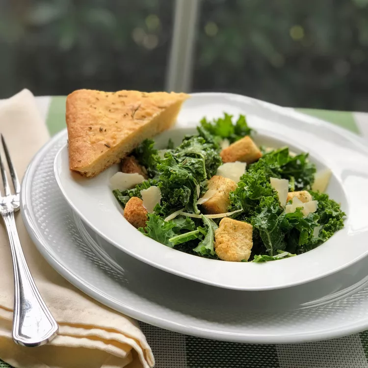

Recipe for Lasagna

Description
Traditional Caesar salad that uses kale instead of romaine! Makes 4 side-dish portions, but you can make it a main dish meal by topping it with a grilled protein, such as chicken or salmon!
You may have leftover dressing, depending on how much you like. It keeps well in the refrigerator for up to a week.
Ingredients
- Mayonnaise
- Lemon Juice
- Garlic
- Anchovy fillets
- Dijon Mustard
- Worcestershire sauce
- salt
- Black Pepper
- Grated Parmigiano-Reggiano cheese
- Kale
- Caesar salad croutons
- Shaved Parmigiano-Reggiano cheese
Steps
- Place mayonnaise, lemon juice, garlic, anchovies, Dijon mustard, Worcestershire sauce, salt, and pepper in the bowl of a food processor. Process until smooth. Transfer to a small bowl and stir in grated Parmigiano-Reggiano cheese. Set aside.
- Place kale in a large salad bowl. Using your hands, massage the kale to soften slightly. Add a few dollops of the dressing on top of the kale, and stir until all pieces are lightly coated with the dressing. Sprinkle with croutons and top with shaved Parmigiano-Reggiano cheese.